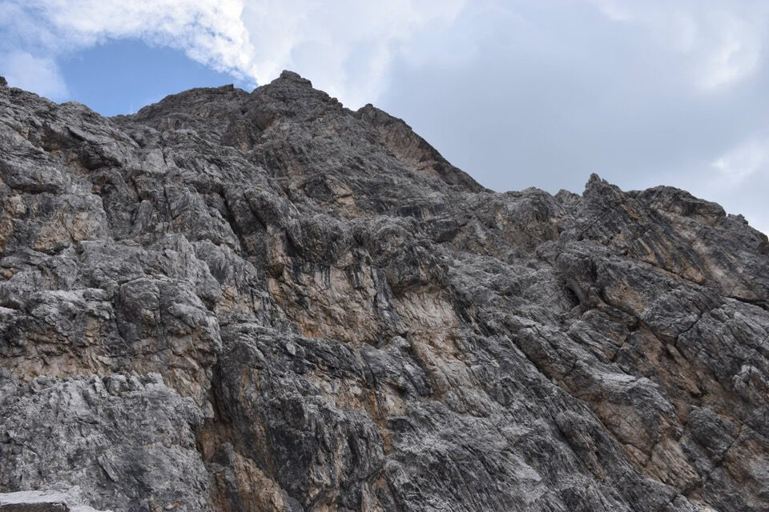
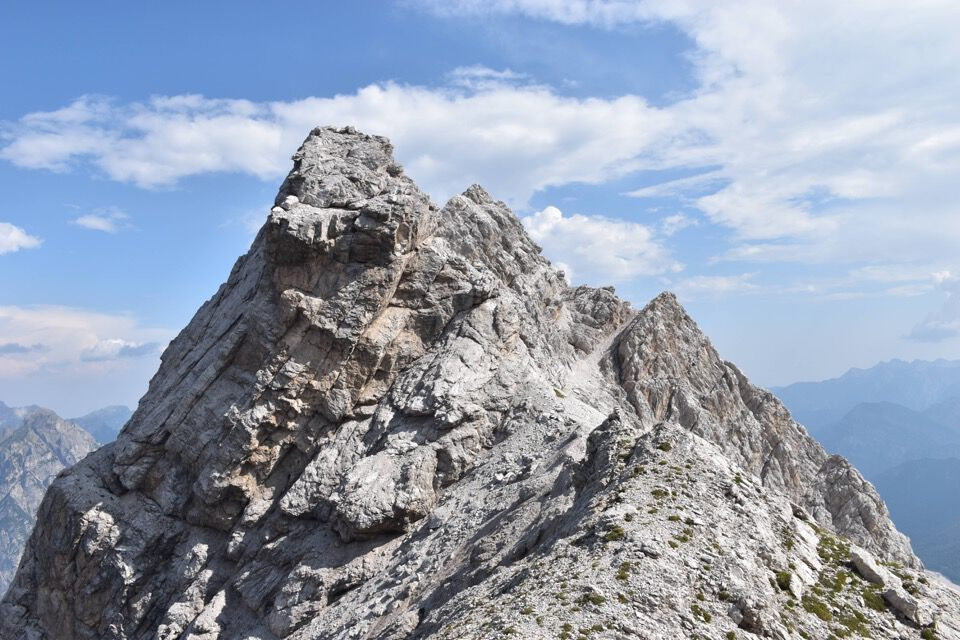

Di qui ci passò Antonio Berti con Luigi Tarra nel 1913 seguendo le vie dei cacciatori di camosci della val Montina; l'itinerario, micidiale, è stato riportato in auge nel 2017 da Luca Basso seguendo le tracce dei selvatici con immenso lavoro di ricerca su una parete distante da tutto e lontanissima da qualunque punto di partenza.
Via lunghissima, grandiosa, in ambiente spettacolare: non c'è rischio di esagerare coll'entusiasmo.
Leggi qui il racconto di Tarra, inserito in un piccolo, delizioso resoconto monografico delle loro esplorazioni degli anni 1913 e 1914, chiamato «Le Dolomiti della Val Montina» (RM 1915).
La parete incombe minacciosa prima dell'alba.
Prime luci sul Duranno.
Di buon'ora nel fondo della val Montina.
La famosa cascata della val dei Preti.
Luoghi fantastici, fuori dal mondo: cima di Collalto a sx con l'omonima forcella, poi cima Laste e forcella dei Preti.
La val dei Preti, mostruosa: epperò si sale e le bestie salgono.
Il gran canalone iniziale: il «quasi sempre neve» è anacronistico.
La mitica cima di Collalto.
Traversi delicati per entrare nel canalone.
La prima cengia: chissà cosa diavolo intendono (e dove sono passati!) Berti e Tarra con «Si sale per detto canalone fin sotto uno strapiombo. Una breve lastra a d. permette di raggiungere una cengia»!
Il camoscio ci passa in mezzo alla velocità della luce...
...letteralmente meno di un secondo per percorrere tutta la cengia!
L'immensità della parete è schiacciante.
Alla ricerca dei (pochi) punti deboli.
L'allucinante zig-zag seguito attraverso canali e cenge: grazie Luca per l'«aiuto da casa».
S'intravede il forcellino d'uscita della via.
La maestosità delle pareti finali che sorreggono la vetta.
Il camino finale che ci ha fatto sudare freddo: altro che II grado, vari passaggi di III abbondante e la faccenda non finiva più.
Terrorizzato dall'idea che magari in alto non si passi più (i canali possono cambiare!), alla vista del Cadin Alto tiro un urlo di sollievo: siamo fuori!
Poco più in alto esce la chilometrica cengia Laste—Preti che parte addirittura dalla forcella di Collalto.
Un numero allucinante di ore di salita per letteralmente quindici secondi in vetta, con il terrore negli occhi per i rombi nelle vicinanze.
Scendiamo per forcella Compól e la val dei Cantoni.
La Cima dei Cantoni.
E giù per la lunga e verniciata val dei Cantoni.
Curiosità: sfogliando il bel volume «Antonio Berti. Cantore delle crode» ho scoperto, leggendo il racconto di Vincenzo Altamura (illustre esploratore, con Herberg, dei Monfalconi—Spalti di Toro negli anni '50), che quest'ultimo è salito sulla Cima dei Preti per la parete Ovest: «Non ricordo se ho salito la Cima dei Preti per la via Berti-Tarra perché mi sembrava ovvio cominciare dalla cima più alta, o per un segreto omaggio a quell'autore che era diventato il mio maestro e mi aveva concesso tante ore di sogno».
Leggi qui il racconto emozionale di Altamura pubblicato su Le Alpi Venete 1966.
La parete è stata salita anche d'inverno nel 1983.
***